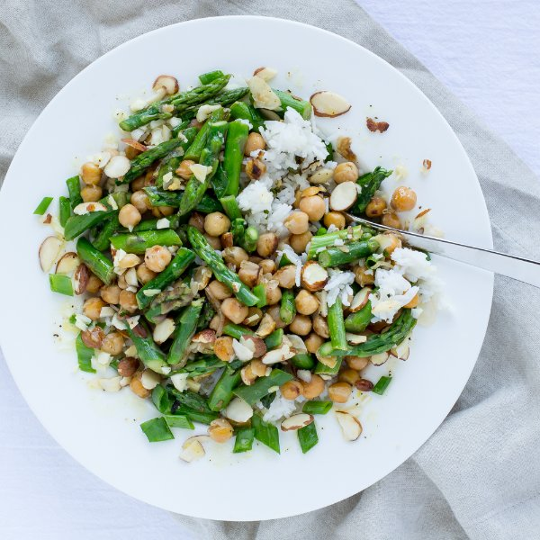

Asparagus & Chickpea Rice Bowl with Almonds & Lemon Vinaigrette

Total Time
35 min
Nutrition (Per Serving)
606.7 kcalCalories
17.1 gProtein
77.3 gCarbs
27.3 gFat
Full nutrition table
| Calories | 606.7 kcal |
| Total fat | 27.3 g |
| Saturated fat | 3.4 g |
| Trans fat | 0 g |
| Cholesterol | 0 mg |
| Sodium | 281.3 mg |
| Carbohydrates | 77.3 g |
| Fiber | 13 g |
| Sugars | 5.1 g |
| Protein | 17.1 g |
| Potassium | 613.3 mg |
| Calcium | 143.7 mg |
| Iron | 6.8 mg |
| Vitamin A | 1200.3 IU |
| Vitamin C | 17.9 mg |
| Vitamin D | 0 IU |
Cookware
Ingredients
- ¼ cupalmonds, sliced
- 2 small bunchesasparagus
- 1 cupbasmati rice
- 2 (15 oz) cansgarbanzo beans (chickpeas)
- 2 clovesgarlic
- 1 small bunchgreen onions (scallions)
- 1lemon
- 2shallots
- black pepper
- Dijon mustard
- extra virgin olive oil
- salt
Steps
- Rinse the rice in a colander and transfer to a small saucepan. Add water and salt; bring to a boil.1 cup basmati rice
2 cups water
¼ tsp salt - Meanwhile, wash and dry the fresh produce.2 small bunches asparagus
1 small bunch green onions (scallions)
1 lemon - Snap or cut off and discard the woody ends of the asparagus; cut the spears on an angle into 2-inch pieces. Transfer to a large bowl.
- Once the water is boiling, reduce the heat to low, stir, and cover. Cook until the liquid is absorbed, 15 to 18 minutes. Remove from the heat and let the rice stand, covered, for 5 minutes.
- Peel and halve the shallots lengthwise; thinly slice crosswise.2 shallots
- Preheat a skillet over medium heat.
- Drain and rinse the chickpeas.2 (15 oz) cans garbanzo beans (chickpeas)
- Add olive oil to the skillet and swirl to coat the bottom.2 tbsp extra virgin olive oil
- Add the shallots and chickpeas to the skillet and stir to coat in the oil; cook, stirring occasionally, until the chickpeas are lightly browned and the shallots are softened, 3 to 4 minutes.
- Meanwhile, trim and discard the ends of the green onions; cut the onions on an angle into ¼-inch pieces.
- Add the asparagus and ½ of the onions (save the rest for garnishing) to the skillet; season with salt and pepper. Cook, stirring occasionally, until the asparagus is bright green and tender, 3 to 4 minutes. Once done, remove from the heat.½ tsp salt
¼ tsp black pepper - Meanwhile, peel and mince the garlic.2 cloves garlic
- Juice the lemon into a small bowl. Add the minced garlic, olive oil, Dijon, salt, and pepper; whisk together.4 tbsp extra virgin olive oil
1 tsp Dijon mustard
½ tsp salt
¼ tsp black pepper - Measure out the almonds.¼ cup almonds, sliced
- Divide the rice between bowls and top with the asparagus and chickpea mixture. Sprinkle with the almonds and remaining green onions and drizzle with the dressing. Enjoy!